Code
library(tidyverse)
library(tidycensus)
library(sf)
library(caret)
library(dplyr)
Sys.getenv("CENSUS_API_KEY") != "" # should print TRUE[1] TRUEMUSA 5080 · Integrates Weeks 1–5 · Due Friday, October 16
This is not a competition. There’s no leaderboard and no target RMSE. The goal is to practice the full prediction workflow on a question you choose, and to find out what actually helps. Some features you’re sure will help won’t, and some you add on a whim will. Both are findings.
You’ll:
Timing. Parts 1–4 use only what we’ve covered through Week 5. You can finish them before the October 9 lecture. Part 5 is new material; the lecture explains it, and the instructions below give you the essentials.
Type the code yourself. The worked examples show the pattern. Your job is to apply it to your outcome and your data choices.
Every model is cross-validated on the same tracts with the same folds, so the rows in your model log are comparable. If a new variable has missing values, fill them (for example, 0 for a count, or the median with a note) or choose a different variable. The cv_rmse() helper below will stop and tell you if you break this rule.
Your outcome comes from the 2019–2023 ACS. Pull open data from 2023 or earlier (2021–2023 is ideal). Using 2025 data to predict a 2023 outcome uses information from the future, which a real prediction model would never have.
Don’t use any variable that’s built from your outcome or measures the same thing another way. Ask yourself: would an agency trying to predict this outcome for a tract have this variable? If the answer is “only because it’s basically the outcome,” leave it out.
library(tidyverse)
library(tidycensus)
library(sf)
library(caret)
library(dplyr)
Sys.getenv("CENSUS_API_KEY") != "" # should print TRUE[1] TRUEThis function runs 10-fold cross-validation with the same seed every time, so every model in your log is tested on the same folds. You don’t need to change it. Read it once so you know what it does.
ctrl <- trainControl(method = "cv", number = 10)
cv_rmse <- function(formula, data) {
df <- if (inherits(data, "sf")) st_drop_geometry(data) else data
vars <- all.vars(formula)
bad <- vars[sapply(vars, function(v) any(is.na(df[[v]])))]
if (length(bad) > 0) {
stop("These variables have NAs: ", paste(bad, collapse = ", "),
". Fill them or choose another variable (Rule 1: don't drop rows).")
}
set.seed(5080)
fit <- train(formula, data = df, method = "lm", trControl = ctrl)
fit$results$RMSE
}Every time you fit a new model, add a row. By the end, this table is the story of your assignment.
model_log <- tibble(
model = character(),
added = character(),
cv_rmse = numeric(),
notes = character()
)Pick a tract-level ACS variable for Philadelphia that matters for policy. Two outcomes are off limits: median gross rent (we did it in lab) and median home value (save it for A5).
Some ideas if you’re stuck:
| Outcome | Why an agency might care | ACS table |
|---|---|---|
| % of households with no vehicle | Transit planning | B08201 or B25044 |
| Mean travel time to work | Access to jobs | B08013_001 ÷ B08303_001 |
| % of people below poverty | Targeting services | B17001 |
| % of housing units vacant | Housing and blight | B25002 |
| % of households overcrowded | Housing conditions | B25014 |
Use load_variables(2023, "acs5") to browse and find exact variable codes.
Choose three to five ACS predictors for your baseline model. They should be things that plausibly relate to your outcome, but none of them may be built from your outcome (Rule 3).
philly_tracts <- get_acs(
geography = "tract",
state = "PA",
county = "Philadelphia",
variables = c(
total_pop = "B01003_001",
# your outcome's numerator and denominator (or median), e.g.:
hh_no_veh = "B08201_002",
# your baseline predictors, e.g.:
below_poverty = "B17001_002",
high_edu = "B15003_022",
pop_under18 = "B09001_001"
),
year = 2023,
output = "wide",
geometry = TRUE, progress = FALSE
) %>%
st_transform(2272)philly_tracts <- philly_tracts %>%
mutate(
# build your outcome, e.g. a percentage:
perc_no_veh = hh_no_vehE / total_popE * 100,
# and its reliability. For a percentage, use tidycensus::moe_prop();
no_veh_reliable = moe_prop(hh_no_vehE, total_popE, hh_no_vehM, total_popM),
# for a median or count, use the E and M columns directly.
# y_moe = ___,
# y_cv = (y_moe / 1.645) / y * 100
# your predictors:
perc_poverty = below_povertyE / total_popE *100,
perc_high_edu = high_eduE / total_popE * 100,
perc_under18 = pop_under18E / total_popE *100
)Before you commit, check three things.
# How many tracts have no value for your outcome?
sum(is.na(philly_tracts$perc_no_veh))[1] 17# How reliable is it?
summary(philly_tracts$no_veh_reliable) Min. 1st Qu. Median Mean 3rd Qu. Max. NA's
0.002001 0.025685 0.035754 0.041018 0.052175 0.224490 17 philly_tracts %>%
mutate(reliability = case_when(
no_veh_reliable < .12 ~ "High",
no_veh_reliable <= .40 ~ "Moderate",
TRUE ~ "Low"
)) %>%
st_drop_geometry() %>%
count(reliability) reliability n
1 High 389
2 Low 17
3 Moderate 2# What does the distribution look like?
ggplot(philly_tracts, aes(x = no_veh_reliable)) +
geom_histogram(bins = 30) +
theme_minimal()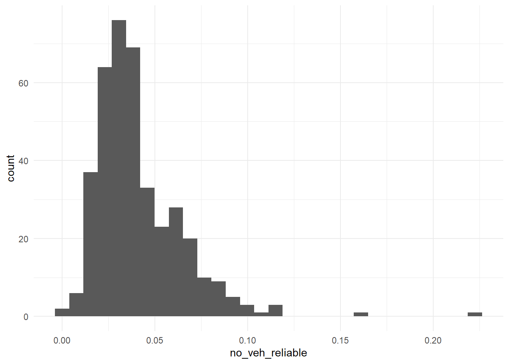
If more than about a third of tracts have low reliability, consider a different outcome, or one built from larger counts. Write your reasoning either way.
Answer (2–3 sentences): What is your outcome, why would an agency want to predict it, and how reliable is it?
Your answer: My outcome is households with zero vehicle ownership. This outcome could be useful for predicting public transportation ridership for a new transit line. It is relatively reliable, with 95% of tracts falling within the parameters of high reliability (less than 12%).
Filter once, here, and never again. Every later step uses tracts.
tracts <- philly_tracts %>%
filter(total_popE > 0,
!is.na(perc_no_veh),
# add !is.na() for each baseline predictor like in the in-class lab
!is.na(perc_poverty),
!is.na(perc_high_edu),
!is.na(perc_under18)
)
nrow(philly_tracts)[1] 408nrow(tracts)[1] 391Answer: How many tracts did you lose, and what kinds of places are they?
Your answer: 18 tracts were removed. This is because these tracts have an estimated total population of zero.
Plot your outcome against each predictor before modeling (the Week 3 habit).
# one scatterplot per predictor, e.g.:
ggplot(tracts, aes(x = perc_poverty, y = perc_no_veh)) + geom_point(alpha = 0.5) +
geom_smooth(method = "lm", se = FALSE) + theme_minimal()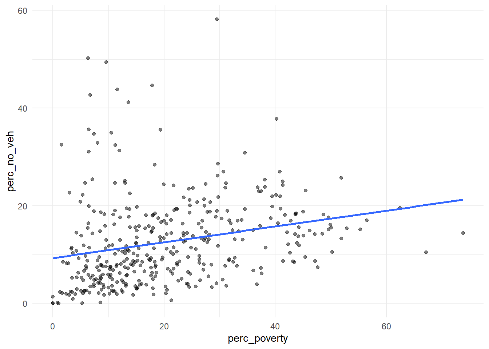
ggplot(tracts, aes(x = perc_high_edu, y = perc_no_veh)) + geom_point(alpha = 0.5) +
geom_smooth(method = "lm", se = FALSE) + theme_minimal()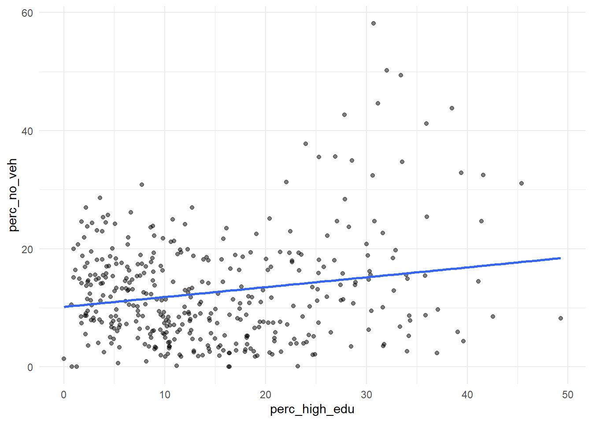
ggplot(tracts, aes(x = perc_under18, y = perc_no_veh)) + geom_point(alpha = 0.5) +
geom_smooth(method = "lm", se = FALSE) + theme_minimal()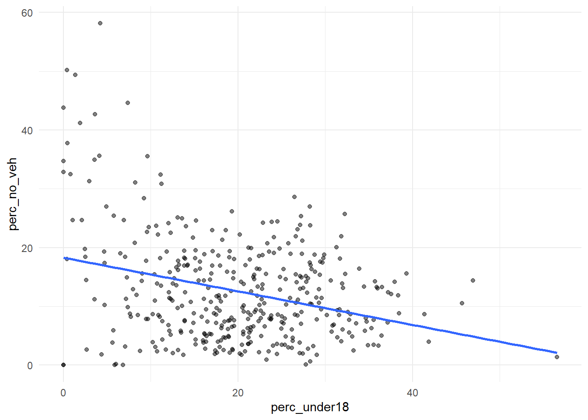
f1 <- perc_no_veh ~ perc_poverty + perc_high_edu + perc_under18
m1 <- lm(f1, data = tracts)
summary(m1)
Call:
lm(formula = f1, data = tracts)
Residuals:
Min 1Q Median 3Q Max
-16.241 -4.433 -0.946 4.007 32.415
Coefficients:
Estimate Std. Error t value Pr(>|t|)
(Intercept) 9.38695 1.81127 5.183 3.53e-07 ***
perc_poverty 0.38533 0.03389 11.369 < 2e-16 ***
perc_high_edu 0.21650 0.05185 4.175 3.68e-05 ***
perc_under18 -0.39428 0.05266 -7.488 4.78e-13 ***
---
Signif. codes: 0 '***' 0.001 '**' 0.01 '*' 0.05 '.' 0.1 ' ' 1
Residual standard error: 7.361 on 387 degrees of freedom
Multiple R-squared: 0.32, Adjusted R-squared: 0.3147
F-statistic: 60.7 on 3 and 387 DF, p-value: < 2.2e-16model_log <- model_log %>%
add_row(model = "m1", added = "ACS baseline",
cv_rmse = cv_rmse(f1, tracts),
notes = "3 predictors used")
model_log# A tibble: 1 × 4
model added cv_rmse notes
<chr> <chr> <dbl> <chr>
1 m1 ACS baseline 7.31 3 predictors usedWrite the CV RMSE as a sentence, in your outcome’s units: On tracts it hasn’t seen, the baseline model misses by about 7.3%.
Save this map. You’ll compare it to your final model’s map in Part 6.
tracts <- tracts %>% mutate(resid_m1 = residuals(m1))
ggplot(tracts) +
geom_sf(aes(fill = resid_m1), color = NA) +
scale_fill_gradient2(low = "#2166ac", mid = "grey95", high = "#b2182b", midpoint = 0) +
theme_void() +
labs(title = "Baseline Model: Where it's Wrong",
subtitle = "Red = actual higher than predicted",
fill = "Residual")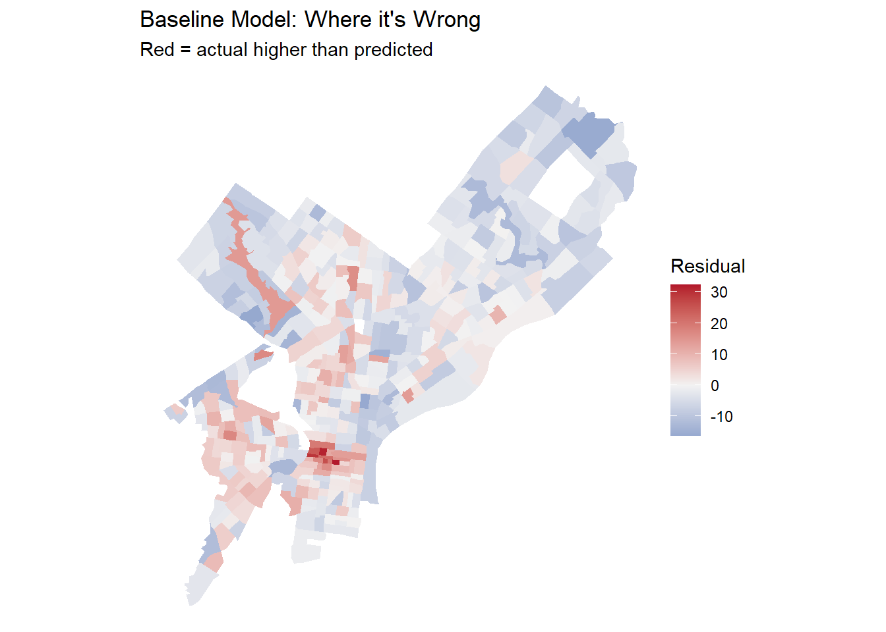
Answer: Where do the residuals cluster? What might those places have in common that your model doesn’t know about? Use this answer to choose your open data layers in Part 3.
Your answer: The model has the largest residuals around Center City, and additional clusters around Southwest and Northeast Philadelphia. In the case of Center City, the model may be vastly under-predicting the percentage of households with no cars because while there is a concentration of highly educated individuals and relatively low levels of poverty, the area is actually the most densely populated and walkable area in Philadelphia, therefore car ownership is less of a necessity for commuting or other aspects of daily life. Conversely, the model may be over-predicting the percentage of households with no cars in the Far Northeast because the model doesn’t account for the unwalkable, suburban layout of the area despite lower rates of higher education and poverty correlating with higher rates of car ownership.
Many of the city’s datasets on OpenDataPhilly are served through a Carto SQL API. You send a SQL query in a URL, and it sends back data. Ask for format=GeoJSON and st_read() reads the result directly, just like the Indego feed in Week 4.
The pattern:
https://phl.carto.com/api/v2/sql?format=GeoJSON&q=SELECT ... FROM table_name WHERE ...Three pieces of SQL are all you need:
SELECT the_geom, column1, column2 chooses which columns come back. Always include the_geom, or you get no geometry.FROM table_name chooses the dataset.WHERE ... filters rows. Filter in the query, not in R. Some tables have millions of rows, and pulling everything will be slow or fail.This helper builds the URL for you. Spaces and symbols in a URL need encoding, and URLencode() handles that.
carto_get <- function(sql) {
url <- paste0("https://phl.carto.com/api/v2/sql?format=GeoJSON&q=", URLencode(sql))
st_read(url, quiet = TRUE)
}On a dataset’s OpenDataPhilly page, look for the API link. The table name is the word after FROM in the example query. To see what values a column takes before you filter on it, ask for a count in CSV format:
# What kinds of crime are in the incidents table in 2023?
url <- paste0("https://phl.carto.com/api/v2/sql?format=csv&q=",
URLencode("SELECT text_general_code, COUNT(*) AS n
FROM incidents_part1_part2
WHERE dispatch_date >= '2023-01-01' AND dispatch_date < '2024-01-01'
GROUP BY text_general_code ORDER BY n DESC"))
read_csv(url)# A tibble: 32 × 2
text_general_code n
<chr> <dbl>
1 Thefts 37054
2 Other Assaults 25986
3 Motor Vehicle Theft 22478
4 Vandalism/Criminal Mischief 17346
5 All Other Offenses 13334
6 Theft from Vehicle 13002
7 Fraud 7661
8 Aggravated Assault No Firearm 5134
9 Burglary Residential 3800
10 Aggravated Assault Firearm 3320
# ℹ 22 more rowsburglary <- carto_get(
"SELECT the_geom, text_general_code, dispatch_date
FROM incidents_part1_part2
WHERE dispatch_date >= '2023-01-01' AND dispatch_date < '2024-01-01'
AND text_general_code = 'Burglary Residential'"
) %>%
st_transform(st_crs(tracts)) # Carto returns EPSG 4326; translate immediately
nrow(burglary)[1] 3800burglary <- carto_get(
"SELECT the_geom, text_general_code, dispatch_date
FROM incidents_part1_part2
WHERE dispatch_date >= '2023-01-01' AND dispatch_date < '2024-01-01'
AND text_general_code = 'Burglary Residential'"
) %>%
filter(!st_is_empty(burglary)) %>%
st_transform(st_crs(tracts)) # Carto returns EPSG 4326; translate immediately
nrow(burglary)[1] 3681Some records have no location. Drop them with filter(!st_is_empty(burglary)), and count how many you lost. Every point you drop is a point that won’t be counted.
These tables were available on Carto as of this fall. If a query fails, check the dataset’s OpenDataPhilly page for the current table name.
| Data | Table | Filter on | Notes |
|---|---|---|---|
| Crime incidents | incidents_part1_part2 |
dispatch_date, text_general_code |
Pick specific offense types |
| Shooting victims | shootings |
date_ |
Small enough to pull several years |
| 311 requests | public_cases_fc |
requested_datetime, service_name |
Use the count query above to see service names |
| Indego stations | (not Carto) https://www.rideindego.com/stations/json/ |
— | The Week 4 feed |
Datasets not on Carto often have a GeoJSON download link on their OpenDataPhilly page. st_read() reads those URLs too. For example, navigage to https://opendataphilly.org/, find a dataset that you’d like to import. I found city landmarks. On the page there is a link to a GeoJSON file. I simply right-clicked on that hyperlink and copied it and then used st_read() and pasted the link:
landmarks <- st_read(“https://hub.arcgis.com/api/v3/datasets/6b2fe4a0fbe14e0a8e6afceaea230b8e_0/downloads/data?format=geojson&spatialRefId=4326&where=1%3D1”)
Pull at least two layers that you think relate to your outcome. Base your choice on your Part 2C answer.
layer1 <- carto_get(
"SELECT the_geom, category_code_description
FROM opa_properties_public
WHERE category_code_description = 'APARTMENTS > 4 UNITS' OR category_code_description = 'SINGLE FAMILY' OR category_code_description = 'MULTI FAMILY'"
) |>
st_transform(st_crs(tracts))
car_streets <- c("Urban Arterial", "Auto Oriented Commercial/Industrial", "N/A Interstate", "Scenic Drive")
layer2 <- st_read("https://hub.arcgis.com/api/v3/datasets/ed90e9016aab4c429cb7dd8aef2a87a3_0/downloads/data?format=geojson&spatialRefId=4326&where=1%3D1") |>
select(CLASS1, SPEEDLIM, STREET_TYP, geometry) |>
subset(STREET_TYP %in% car_streets) |>
st_transform(st_crs(tracts))Reading layer `CompleteStreets' from data source
`https://hub.arcgis.com/api/v3/datasets/ed90e9016aab4c429cb7dd8aef2a87a3_0/downloads/data?format=geojson&spatialRefId=4326&where=1%3D1'
using driver `GeoJSON'
Simple feature collection with 40659 features and 28 fields
Geometry type: LINESTRING
Dimension: XY
Bounding box: xmin: -75.28113 ymin: 39.87503 xmax: -74.95752 ymax: 40.13847
Geodetic CRS: WGS 84Answer: Why these layers? What do you expect them to capture that the ACS variables don’t?
Your answer: Layer 1 represents housing/residential units. Layer 2 represents roads that are unpleasant to walk on or otherwise inaccessible to pedestrians (i.e. car-centric roads). I am expecting to use both of these variables to approximate walkability for each census tract. I hypothesize that a more housing units and a less of car-centric roads (relative to the size of each tract) will correlate with a higher percentage of households who don’t own a car.
Every feature below reuses a Week 4 tool. The worked examples use burglaries and Indego stations; you build the same types from your own layers.
How many burglaries fall in each tract?
tracts <- tracts %>%
mutate(n_burglary = lengths(st_intersects(., burglary)))
summary(tracts$n_burglary) Min. 1st Qu. Median Mean 3rd Qu. Max.
0.000 4.000 7.000 9.407 13.000 48.000 A tract with no burglaries gets 0, not NA, so Rule 1 is safe.
Raw counts mostly measure tract size. A big tract has more of everything. Normalize by area, by population, or by housing units, depending on what makes sense for the thing you’re counting.
tracts <- tracts %>%
mutate(
area_sqmi = as.numeric(st_area(.)) / 27878400, # sq ft in a sq mile
burglary_per_sqmi = n_burglary / area_sqmi,
burglary_per_1k = n_burglary / total_popE * 1000
)If a tract has 40 residents and 3 burglaries, its rate is 75 per 1,000, which is a huge number built on tiny counts. Look at the tracts with the highest per-capita rates before you trust them. This is the Week 3 lesson about small denominators again.
How far is each tract from its nearest Indego station? Use the Week 4 pattern: find the nearest feature, then measure to it element by element.
stations <- st_read("https://www.rideindego.com/stations/json/", quiet = TRUE) %>%
st_transform(st_crs(tracts))
tract_pts <- st_point_on_surface(tracts) # always inside the tract, unlike a centroid
nearest_idx <- st_nearest_feature(tract_pts, stations)
tracts <- tracts %>%
mutate(dist_station_mi = as.numeric(
st_distance(tract_pts, stations[nearest_idx, ], by_element = TRUE)) / 5280)Sometimes the “thing” is a single location, such as City Hall as a stand-in for the center of the regional economy.
city_hall <- st_sfc(st_point(c(-75.1636, 39.9526)), crs = 4326) %>%
st_transform(st_crs(tracts))
tracts <- tracts %>%
mutate(dist_ch_mi = as.numeric(st_distance(tract_pts, city_hall)) / 5280)Build at least three spatial features from your own layers, and use at least two types (count, density, nearest distance, distance to a place). After each one, fit a model, cross-validate it, and log it.
tracts <- tracts %>%
mutate(
h_count = lengths(st_intersects(., layer1)),
h_density = h_count / area_sqmi,
road_count = lengths(st_intersects(., layer2)))
f2 <- perc_no_veh ~ perc_poverty + perc_high_edu + perc_under18 + h_count
model_log <- model_log %>%
add_row(model = "m2", added = "h_count",
cv_rmse = cv_rmse(f2, tracts),
notes = "Properties coded as single, multi, or apt")
f3 <- perc_no_veh ~ perc_poverty + perc_high_edu + perc_under18 + h_density
model_log <- model_log %>%
add_row(model = "m3", added = "h_density",
cv_rmse = cv_rmse(f3, tracts),
notes = "Density with respect to tract area")
f4 <- perc_no_veh ~ perc_poverty + perc_high_edu + perc_under18 + road_count
model_log <- model_log %>%
add_row(model = "m4", added = "road_count",
cv_rmse = cv_rmse(f4, tracts),
notes = "Roads coded as arterials or car-oriented")
# repeat for each feature
model_log# A tibble: 4 × 4
model added cv_rmse notes
<chr> <chr> <dbl> <chr>
1 m1 ACS baseline 7.31 3 predictors used
2 m2 h_count 7.27 Properties coded as single, multi, or apt
3 m3 h_density 6.97 Density with respect to tract area
4 m4 road_count 7.20 Roads coded as arterials or car-oriented Answer: Which spatial feature helped most? Did any feature you expected to help do nothing, or make CV RMSE worse? Why might that be?
Your answer: Housing density (defined as number of housing units divided by tract area) marginally lowered the RMSE (with respect to the original model). Housing count and car-centric road count did not significantly impact the RMSE. I expected that housing density would be more useful than housing count, given that housing density more accurately reflects the physical conditions of walkable neighborhoods and also controls for tract size. I suspect that car-centric roads as a variable had less of an impact on the model due to the fact that these types of roads tend to be larger roads that span multiple tracts and may even cut across the whole city, therefore it is hard to judge the impact of any of these roads on any one census tract.
Watch the October 9 recorded lecture before you start this part. Below is a summary to work from.
So far, every predictor has entered the model as a straight line: each additional unit of X changes predicted Y by the same amount, everywhere. Transformations let the model bend. For prediction, the question is simply does the bend lower CV RMSE? For interpretation, each transformation changes what a coefficient means, so you need to know how to read it.
Keep your outcome y untransformed in this assignment. If you model log(y), your CV RMSE comes out in log units and can’t be compared to the other rows in your log. (Predicting a logged outcome well requires back-transforming, which is an A4 topic.)
Many urban variables are skewed: a few tracts have huge values, and most have small ones. Income, density, and counts are typical. A log compresses the long tail, so a model can use the difference between 1 and 10 as well as the difference between 100 and 1,000.
ggplot(tracts, aes(x = burglary_per_sqmi)) + geom_histogram(bins = 30) + theme_minimal()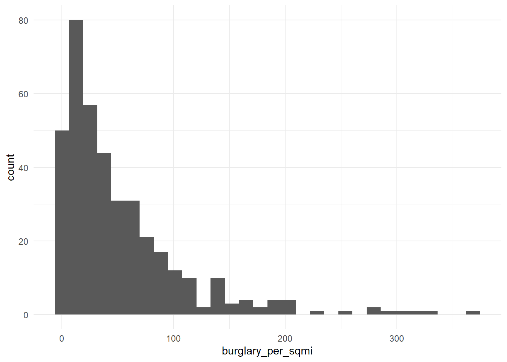
ggplot(tracts, aes(x = log1p(burglary_per_sqmi))) + geom_histogram(bins = 30) + theme_minimal()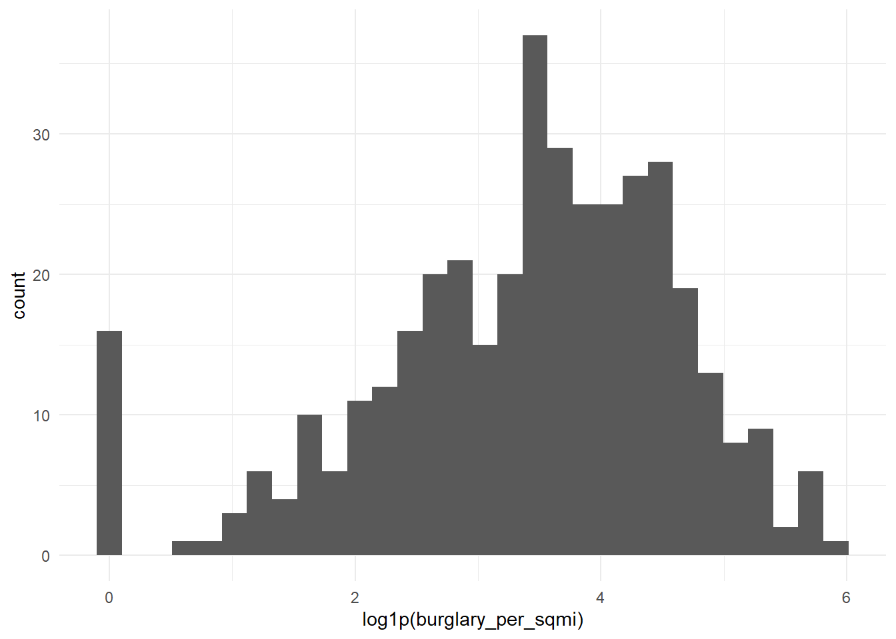
log(0) is -Inf, and it will break your model. Counts and densities often include zeros. Use log1p(x), which computes log(x + 1), for anything that can be 0.
Reading the coefficient: when a predictor is logged, a 1% increase in X goes with a change of about β/100 in Y, in Y’s units. With log1p, this reading is approximate for small values of X.
If your scatterplot bends (rising and then flattening, or falling and then rising), a squared term lets the line curve. Write it with I(), which tells R to do the arithmetic rather than read ^ as formula syntax.
m_sq <- lm(perc_no_veh ~ dist_ch_mi + I(dist_ch_mi^2), data = tracts)
summary(m_sq)
Call:
lm(formula = perc_no_veh ~ dist_ch_mi + I(dist_ch_mi^2), data = tracts)
Residuals:
Min 1Q Median 3Q Max
-18.739 -3.562 -0.828 3.135 34.716
Coefficients:
Estimate Std. Error t value Pr(>|t|)
(Intercept) 24.54124 0.93761 26.174 < 2e-16 ***
dist_ch_mi -3.35728 0.34012 -9.871 < 2e-16 ***
I(dist_ch_mi^2) 0.13716 0.02558 5.363 1.41e-07 ***
---
Signif. codes: 0 '***' 0.001 '**' 0.01 '*' 0.05 '.' 0.1 ' ' 1
Residual standard error: 6.818 on 388 degrees of freedom
Multiple R-squared: 0.4151, Adjusted R-squared: 0.4121
F-statistic: 137.7 on 2 and 388 DF, p-value: < 2.2e-16Reading the coefficient: you can’t read either coefficient alone anymore. The effect of X depends on where you are along X. A positive linear term with a negative squared term means Y rises with X and then levels off or turns down. Plot the fitted curve to see it:
ggplot(tracts, aes(x = dist_ch_mi, y = perc_no_veh)) +
geom_point(alpha = 0.4) +
geom_smooth(method = "lm", formula = y ~ x + I(x^2), se = FALSE, color = "red") +
theme_minimal()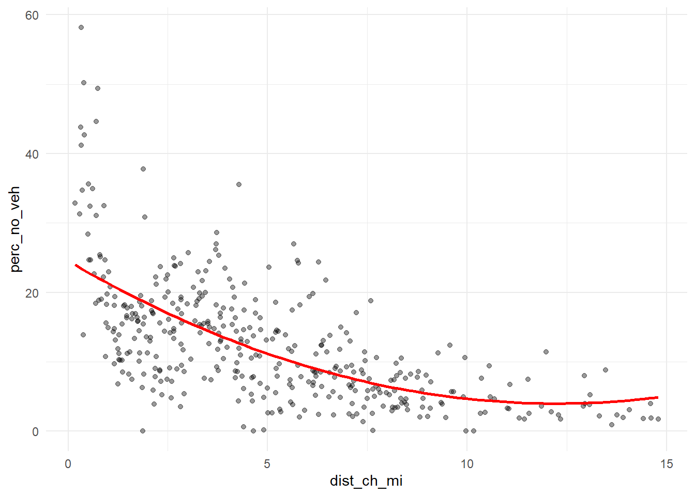
Sometimes a number works better as groups, either because the relationship isn’t smooth or because the categories are meaningful. You can make categories from any variable with case_when() or cut(), and then make sure R treats them as a factor.
tracts <- tracts %>%
mutate(
ring = case_when(
dist_ch_mi < 2 ~ "Core",
dist_ch_mi < 5 ~ "Inner",
TRUE ~ "Outer"
),
ring = factor(ring, levels = c("Core", "Inner", "Outer"))
)
tracts %>% st_drop_geometry() %>% count(ring) ring n
1 Core 81
2 Inner 137
3 Outer 173m_cat <- lm(perc_no_veh ~ ring, data = tracts)
summary(m_cat)
Call:
lm(formula = perc_no_veh ~ ring, data = tracts)
Residuals:
Min 1Q Median 3Q Max
-20.505 -4.692 -1.116 3.463 37.652
Coefficients:
Estimate Std. Error t value Pr(>|t|)
(Intercept) 20.5054 0.8120 25.253 < 2e-16 ***
ringInner -6.0589 1.0243 -5.915 7.29e-09 ***
ringOuter -13.0551 0.9839 -13.269 < 2e-16 ***
---
Signif. codes: 0 '***' 0.001 '**' 0.01 '*' 0.05 '.' 0.1 ' ' 1
Residual standard error: 7.308 on 388 degrees of freedom
Multiple R-squared: 0.3281, Adjusted R-squared: 0.3246
F-statistic: 94.71 on 2 and 388 DF, p-value: < 2.2e-16Reading the coefficients: R turns a factor with k categories into k − 1 dummy variables. The category left out is the reference level (here, “Core,” the first level). Each coefficient is the difference from the reference: ringOuter is how much higher or lower predicted Y is in outer tracts compared to core tracts, holding everything else in the model constant. To change the reference, use relevel(ring, ref = "Outer").
If a category has only a handful of tracts, its coefficient is unstable, and in cross-validation some folds may not contain it at all. Aim for at least 20 tracts per category.
Try at least one of each: a log, a squared term, and a categorical variable. Choose which variables to transform based on your plots, not at random. Log each model.
ggplot(tracts, aes(x = h_density)) + geom_histogram(bins = 30) + theme_minimal()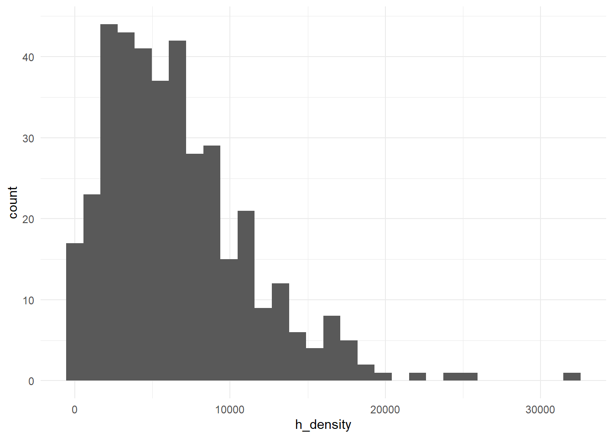
ggplot(tracts, aes(x = perc_poverty)) + geom_histogram(bins = 30) + theme_minimal()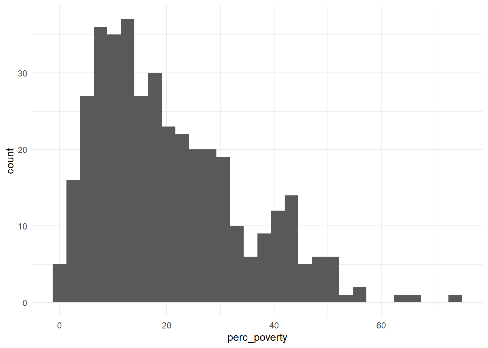
ggplot(tracts, aes(x = perc_high_edu)) + geom_histogram(bins = 30) + theme_minimal()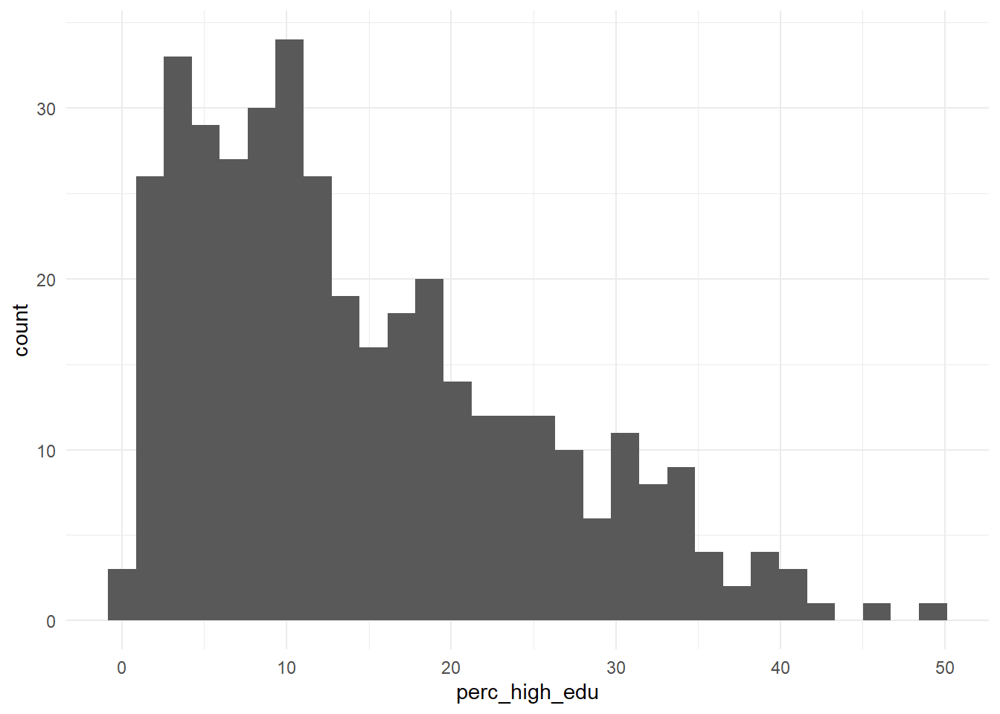
ggplot(tracts, aes(x = perc_under18)) + geom_histogram(bins = 30) + theme_minimal()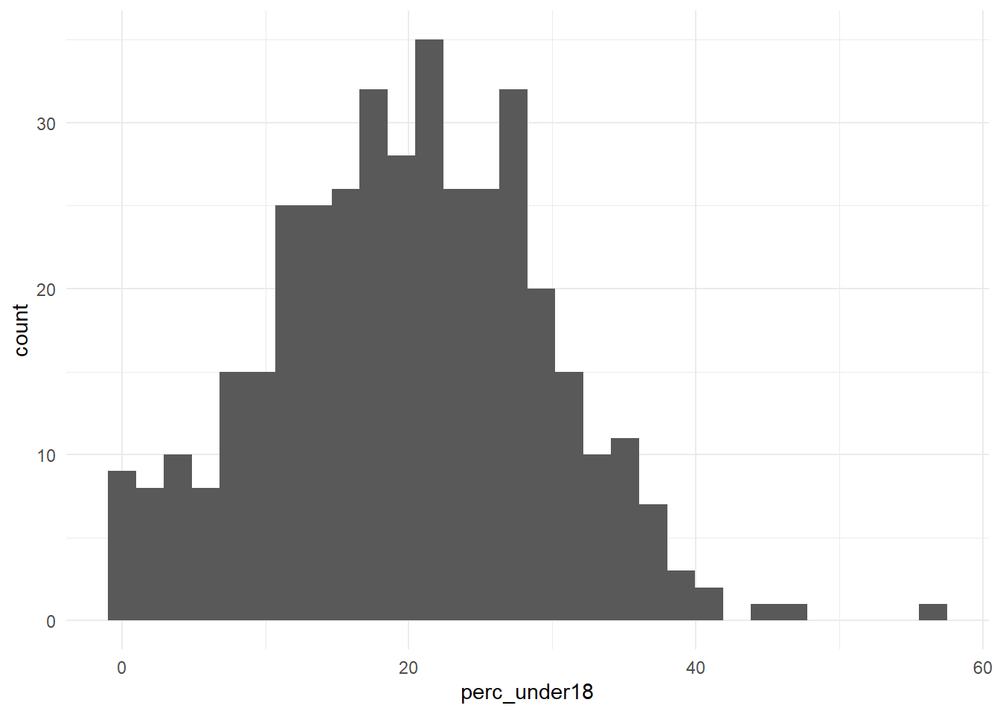
f_log <- perc_no_veh ~ perc_poverty + perc_high_edu + perc_under18 + log1p(h_density)
model_log <- model_log %>%
add_row(model = "m_log", added = "log of housing density",
cv_rmse = cv_rmse(f_log, tracts),
notes = "Was right-skewed")
# squared term
f_sq <- perc_no_veh ~ perc_poverty + perc_high_edu + I(perc_high_edu^2) + perc_under18 + h_density
model_log <- model_log %>%
add_row(model = "m_sq", added = "square of percent higher edu",
cv_rmse = cv_rmse(f_sq, tracts),
notes = "Seemed curved")
# categorical
tracts <- tracts %>%
mutate(
pov_score = case_when(
perc_poverty >= 40 ~ "Extreme",
perc_poverty > 20 ~ "High",
TRUE ~ "Med or Low"
),
pov_score = factor(pov_score, levels = c("Extreme", "High", "Med or Low"))
)
tracts %>% st_drop_geometry() %>% count(pov_score) pov_score n
1 Extreme 47
2 High 123
3 Med or Low 221f_cat <- perc_no_veh ~ pov_score + perc_high_edu + perc_under18 + h_density
model_log <- model_log %>%
add_row(model = "m_cat", added = "categories of poverty",
cv_rmse = cv_rmse(f_cat, tracts),
notes = "Categories as defined by Census Bureau")
summary(lm(perc_no_veh ~ pov_score, data = tracts))
Call:
lm(formula = perc_no_veh ~ pov_score, data = tracts)
Residuals:
Min 1Q Median 3Q Max
-13.446 -6.094 -1.771 3.803 44.099
Coefficients:
Estimate Std. Error t value Pr(>|t|)
(Intercept) 16.229 1.270 12.779 < 2e-16 ***
pov_scoreHigh -2.171 1.493 -1.454 0.146641
pov_scoreMed or Low -5.202 1.399 -3.720 0.000229 ***
---
Signif. codes: 0 '***' 0.001 '**' 0.01 '*' 0.05 '.' 0.1 ' ' 1
Residual standard error: 8.707 on 388 degrees of freedom
Multiple R-squared: 0.04627, Adjusted R-squared: 0.04136
F-statistic: 9.412 on 2 and 388 DF, p-value: 0.000102model_log# A tibble: 7 × 4
model added cv_rmse notes
<chr> <chr> <dbl> <chr>
1 m1 ACS baseline 7.31 3 predictors used
2 m2 h_count 7.27 Properties coded as single, multi,…
3 m3 h_density 6.97 Density with respect to tract area
4 m4 road_count 7.20 Roads coded as arterials or car-or…
5 m_log log of housing density 7.13 Was right-skewed
6 m_sq square of percent higher edu 6.97 Seemed curved
7 m_cat categories of poverty 7.11 Categories as defined by Census Bu…Answer: Which transformation helped most? For your categorical variable, write one sentence reading one of its coefficients correctly, naming the reference level.
Your answer: Using the square of the percentage of residents with a higher education degree marginally improved the RMSE, compared to the first model - although not by much more than when housing density was added as a variable. The other two transformations did not significantly change the RMSE.
When poverty is categorized using the Census’s definitions of “extreme” and “high” poverty rates, a tract with a poverty level of “High” is correlated with about 2% less households with zero car ownership than a tract with an “Extreme” poverty level (i.e. the reference level).
Combine the features and transformations that earned their place, judged by CV RMSE, not p-values.
f_final <- perc_no_veh ~ perc_poverty + perc_high_edu + I(perc_high_edu^2) + perc_under18 + h_density
m_final <- lm(f_final, data = tracts)
summary(m_final)
Call:
lm(formula = f_final, data = tracts)
Residuals:
Min 1Q Median 3Q Max
-15.301 -4.598 -0.812 3.751 33.552
Coefficients:
Estimate Std. Error t value Pr(>|t|)
(Intercept) 1.207e+01 2.041e+00 5.914 7.39e-09 ***
perc_poverty 3.284e-01 3.378e-02 9.722 < 2e-16 ***
perc_high_edu -1.863e-01 1.350e-01 -1.380 0.1684
I(perc_high_edu^2) 7.508e-03 3.138e-03 2.393 0.0172 *
perc_under18 -4.539e-01 5.077e-02 -8.940 < 2e-16 ***
h_density 4.797e-04 8.032e-05 5.972 5.33e-09 ***
---
Signif. codes: 0 '***' 0.001 '**' 0.01 '*' 0.05 '.' 0.1 ' ' 1
Residual standard error: 6.987 on 385 degrees of freedom
Multiple R-squared: 0.3905, Adjusted R-squared: 0.3826
F-statistic: 49.34 on 5 and 385 DF, p-value: < 2.2e-16model_log <- model_log %>%
add_row(model = "final", added = "Squared higher edu",
cv_rmse = cv_rmse(f_final, tracts),
notes = "Same as m_sq")
model_log# A tibble: 8 × 4
model added cv_rmse notes
<chr> <chr> <dbl> <chr>
1 m1 ACS baseline 7.31 3 predictors used
2 m2 h_count 7.27 Properties coded as single, multi,…
3 m3 h_density 6.97 Density with respect to tract area
4 m4 road_count 7.20 Roads coded as arterials or car-or…
5 m_log log of housing density 7.13 Was right-skewed
6 m_sq square of percent higher edu 6.97 Seemed curved
7 m_cat categories of poverty 7.11 Categories as defined by Census Bu…
8 final Squared higher edu 6.97 Same as m_sq tracts <- tracts %>% mutate(resid_m1 = residuals(m1))
ggplot(tracts) +
geom_sf(aes(fill = resid_m1), color = NA) +
scale_fill_gradient2(low = "#2166ac", mid = "grey95", high = "#b2182b", midpoint = 0) +
theme_void() +
labs(title = "Baseline Model: Where it's Wrong",
subtitle = "Red = actual higher than predicted",
fill = "Residual")
tracts <- tracts %>% mutate(resid_final = residuals(m_final))
ggplot(tracts) +
geom_sf(aes(fill = resid_final), color = NA) +
scale_fill_gradient2(low = "#2166ac", mid = "grey95", high = "#b2182b", midpoint = 0) +
theme_void() +
labs(title = "Final Model: Where it's Wrong",
subtitle = "Red = actual higher than predicted",
fill = "Residual")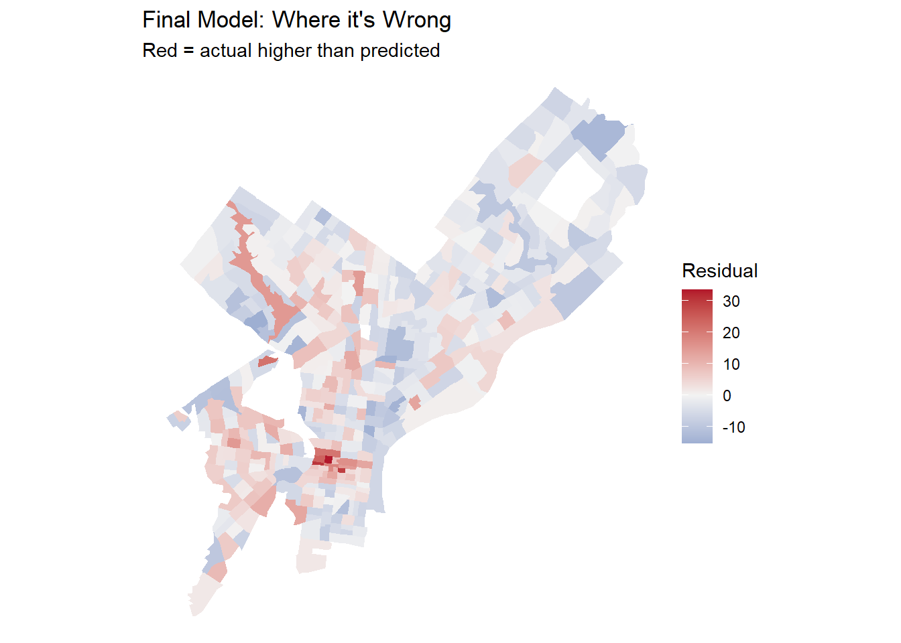
Put your two residual maps side by side, or put them next to each other in the rendered document. Did the clusters from Part 2C shrink? Where did they stay?
Your answer: The clusters from Part 2c did not noticeably shrink. There is slightly less clustering in the Far Northeast, but the model is still significantly under-predicting the percentage of households with no cars in Center City.
ggplot(tracts, aes(x = no_veh_reliable, y = abs(resid_final))) +
geom_point(alpha = 0.5) +
geom_smooth(se = FALSE) +
labs(x = "CV of your outcome estimate (%)", y = "Residuals") +
theme_minimal()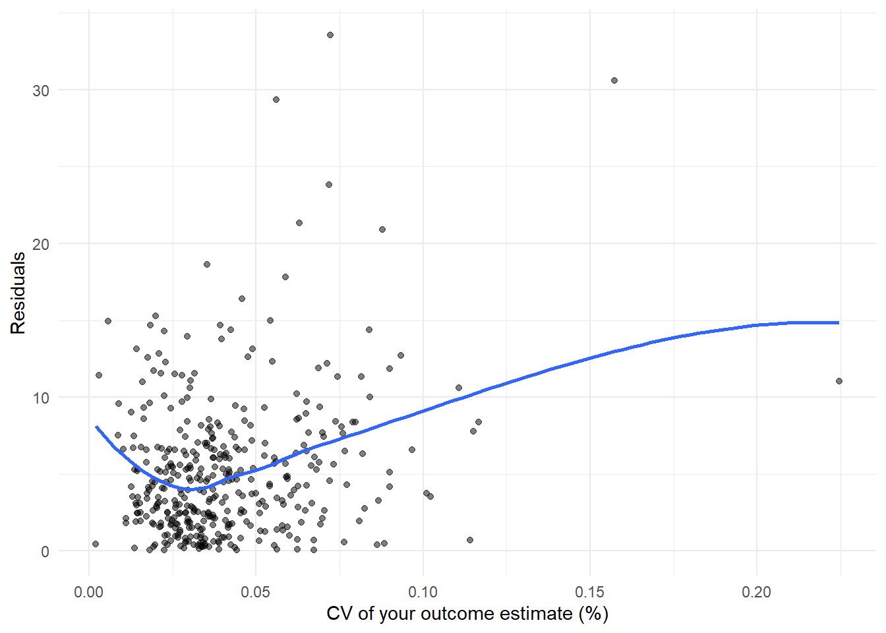
Your answer:
Housing density lowered the CV RMSE the most: from 7.31 in the baseline model to 6.97. I was disappointed that the log of housing density worsened the RMSE rather than improving it; I really thought the log would help with the skew.
All else equal, a one percent increase in the share of residents under the age of 18 in a tract decreases the share of households without cars by 0.45%.
Although the model was supposed to help predict ridership for new public transportation investments, I probably should have included proximity to existing public transportation stops as a variable. Center City has the largest residuals with the final model, and even though I tried to account for walkability by measuring housing density, I think the concentration of public transportation options in the area may be a more influential factor in determining a household’s car ownership than simply walkability. I would be able to get public transit stop data (buses, L line, B line, etc.) from Open Data Philly.
The last plot shows that while many of the model estimates have both small residuals and small coefficients of variation, there are several estimates that do not. This distribution suggests that there is some remaining error that may be due to uncertainty or statistical noise.